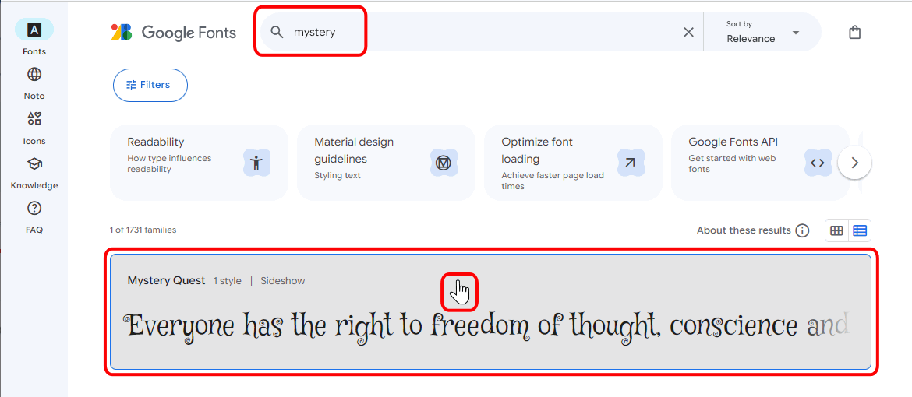
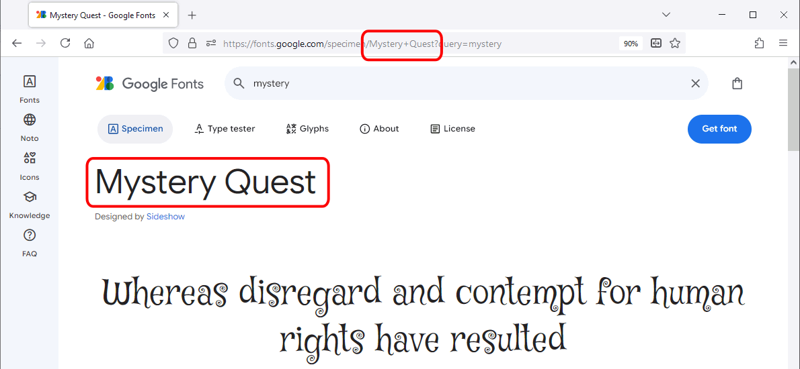
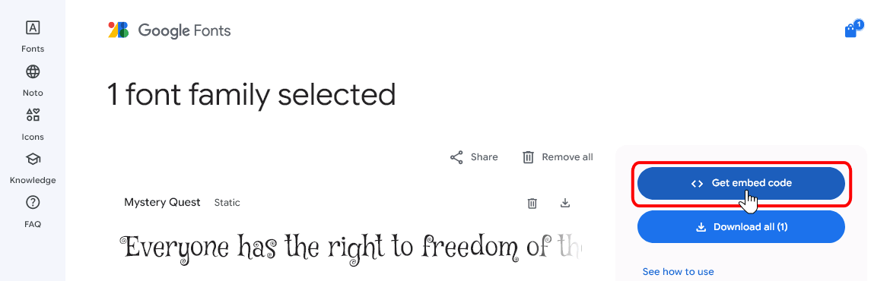

Las fuentes web son las fuentes que pueden mostrarse en el navegador sin necesidad de que el usuario las tenga instaladas en su ordenador ya que se descargan automáticamente.
Fuentes web en CSS 2
La recomendación CSS 2 permitía la utilización de fuentes web mediante el uso de la regla-arroba @font-face, pero la regla-arroba @font-face no está incluida en la recomendación CSS 2.1, por lo que el uso de fuentes web en CSS 2 puede considerarse obsoleto.
Fuentes WOFF (Web Open Font Format)
En 2009 se desarrolló un formato de fuentes llamado WOFF (Web Open Font Format) pensado para la web. En realidad no se trata de un nuevo formato, puesto que una fuente WOFF no es más que una fuente TrueType, OpenType, Open Font o SVG comprimida y con metadatos para indicar detalles como el origen de la fuente o la licencia.
En abril de 2010, Mozilla, Microsoft y Opera presentaron este formato al W3C, que aprobó la recomendación WOFF File Format 1.0 en diciembre de 2012.
Actualmente (noviembre de 2017) se está preparando la recomendación WOFF File Format 2.0 (artículo en lwn.net sobre WOFF2 13/11/2013). Gracias al nuevo algoritmo de compresión Brotli, esta recomendación consigue reducir el tamaño de las fuentes a la cuarta parte, aumentar la velocidad de descompresión y reducir los requisitos de memoria, como se explica en el WOFF 2.0 Evaluation Report publicado por el W3C en marzo de 2016.
El formato WOFF 2 es mucho mejor que el formato WOFF 1 y servicios como Google Fonts ya sólo ofrecen WOFF 2, pero Internet Explorer 11 no admite WOFF 2, por lo que todavía puede ser necesario seguir usando WOFF 1.
Para crear fuentes WOFF se puede utilizar webs como Font Squirrel o Fontie en la que subiendo una fuente TTF u OTF podemos descargar la misma fuente en los formatos WOFF2, WOFF, EOT y SVG.
Fuentes web en CSS 3
La futura recomendación CSS 3: Fuentes (actualmente -noviembre de 2017- en elaboración) permite la utilización de fuentes web mediante el uso de la regla-arroba @font-face, como muestra el ejemplo siguiente:
Esto es un párrafo con fuente web Mystery Quest al 150%.
En la regla @font-face:
La propiedad font-family establece cómo tenemos que llamar a la fuente en la hoja de estilo. Si el nombre contiene espacios en blanco, es necesario escribir el nombre entre comillas.
La propiedad src indica el camino (absoluto o relativo) del fichero de la fuente.
Una vez definido el nombre de la fuente, se puede hacer referencia a ella en las propiedades font-family.
La recomendación no impone ningún formato específico para los tipos de letra, pero nombra algunos como posibilidad: woff (WOFF Web Open Font Format, .woff), truetype (TrueType, .ttf), opentype (OpenType, .ttf, .otf), embedded-opentype (Embedded OpenType, .eot), svg (SVG Font, .svg, .svgz).
Entre ellos, se recomienda utilizar el formato WOFF (Web Open Font Format, .woff), definido en la recomendación del W3C WOFF File Format 1.0 de diciembre de 2012, que admiten Firefox, Internet Explorer y Google Chrome.
Google Fonts / Google Fonts API
Google ofrece un servicio de alojamiento de fuentes libres, Google Fonts.
Google Fonts permite descargar las fuentes en formato TTF a nuestro ordenador para utilizarlas por ejemplo en un procesador de textos. Para ello, hay añadir las fuentes deseadas a una colección y descargar la colección completa.
Lo más interesante de Google Fonts es que las fuentes pueden utilizarse en nuestras páginas web sin necesidad de alojarlas en nuestro propio servidor. Eso tiene la ventaja de que nos ahorramos el tráfico que genera la fuente, pero tiene el inconveniente de que en cualquier momento pueden no estar disponibles. Para intentar evitar este problema conviene indicar varias fuentes, poniendo en último lugar una de las familias genéricas.
Si queremos alojar nosotros las fuentes, Google Fonts ofrece la posibilidad de descargarla en formato TTF, pero a continuación podemos o bien convertir la fuente TTF al formato woff mediante alguna de las páginas web citadas en el apartado Fuentes WOFF, o bien descargarla de Google Fonts utilizando el procedimiento comentado en el apartado Descargar las fuentes de Google Fonts en formato WOFF2.
Las fuentes incluidas en Google Fonts también se encuentran disponibles como repositorio de GitHub: https://github.com/google/fonts/.
Enlazar las fuentes de Google Fonts
Para utilizar Google Fonts, la documentación oficial propone dos métodos equivalentes, aunque yo recomiendo el primero ya que toda la información se encuentra en la hoja de estilo.
Incluir al principio de la hoja de estilo una regla-arroba @import y la fuente se puede utilizar en la hoja de estilo como una familia más, como muestra el ejemplo siguiente:
Esto es un párrafo con fuente web Mystery Quest al 150% alojada en Google Fonts.
Las reglas @import deben escribirse al principio de la hoja de estilo.
Incluir en el documento html un enlace como si fuera un enlace a una hoja de estilo y la fuente se puede utilizar en la hoja de estilo como una familia más, como muestra el ejemplo siguiente:
p {
font-family: "Mystery Quest", cursive;
font-size: 150%;
}
Esto es un párrafo con fuente web Mystery Quest al 150% alojada en Google Fonts.
Se muestra a continuación cómo encontrar en Google Fonts el código de los ejemplos anteriores:
Seleccione la fuente haciendo clic en el símbolo +:
Haga clic en la barra negra que se mostrará en la parte inferior de la ventana:
Se mostrará el código a insertar como enlace a hoja de estilo. Personalmente, yo recomiendo hacerlo como regla-arroba @import, que se muestra en el punto siguiente, porque de esa manera se escribe todo en la hoja de estilo):

Haga clic en @import y se mostrará el código a insertar como regla-arroba @import (recomendado):

Nota:
Por motivos de seguridad, Google Chrome y Firefox (a partir de la versión 26), obligan a que el contenido mixto activo se obtenga mediante https en vez de por http (explicación en Mozilla Developer Network). Es decir, que si una página que se sirve por https (conexión segura) incluye elementos enlazados por http (conexión insegura), estos elementos no se descargan.
Se recomienda por tanto que el enlace a Google Fonts se haga mediante https en vez de http, por si en el futuro la página que enlaza a Google Fonts se sirve medante https.
Descargar las fuentes de Google Fonts en formato WOFF2
Cuando se descarga una fuente de Google Fonts, tan sólo se incluye la fuente en formato ttf. Para obtenerla en formato woff, se puede convertir la fuente ttf en woff utilizando alguna de las aplicaciones web comentadas en el apartado Fuentes WOFF (Web Open Font Format) de esta lección.
Existe un procedimiento para descargar de Google Fonts la fuente en formato woff2, siguiendo los pasos siguientes:
Seleccione la fuente haciendo clic en el símbolo +:
Haga clic en la barra negra que se mostrará en la parte inferior de la ventana:

Se mostrará el código a insertar como enlace a hoja de estilo. Haga clic en la pestaña @import. Seleccione y copie la dirección web http://fonts.googleapis.com/css?family=...:
Pegue esa dirección en la barra de dirección del navegador y pulse Intro. Se mostrará un documento de texto en el que se puede encontrar la dirección web de un archivo woff2 (en la captura el documento contiene dos enlaces a diferentes versiones de la fuente). Selecciones y copie la dirección web.
Pegue esa dirección en la barra de dirección del navegador y pulse Intro. Automáticamente, el navegador le dará la opción de guardar la fuente. Haga clic en Guardar archivo y en Aceptar:
En la carpeta de descargas se mostrará el archivo woff2 descargado:
Cambie el nombre del fichero al nombre de la fuente para facilitar su uso posterior:
 La recomendación CSS 2 permitía la utilización de fuentes web mediante el uso de la regla-arroba @font-face, pero la regla-arroba @font-face no está incluida en la recomendación CSS 2.1, por lo que el uso de fuentes web en CSS 2 puede considerarse obsoleto.
La recomendación CSS 2 permitía la utilización de fuentes web mediante el uso de la regla-arroba @font-face, pero la regla-arroba @font-face no está incluida en la recomendación CSS 2.1, por lo que el uso de fuentes web en CSS 2 puede considerarse obsoleto.